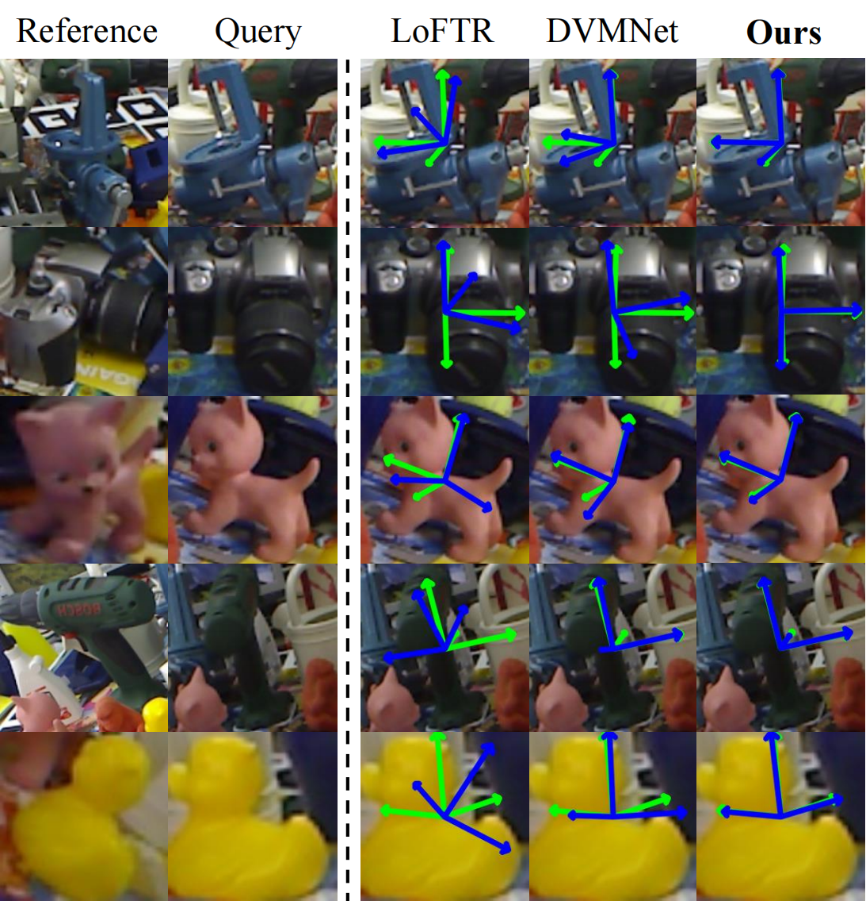
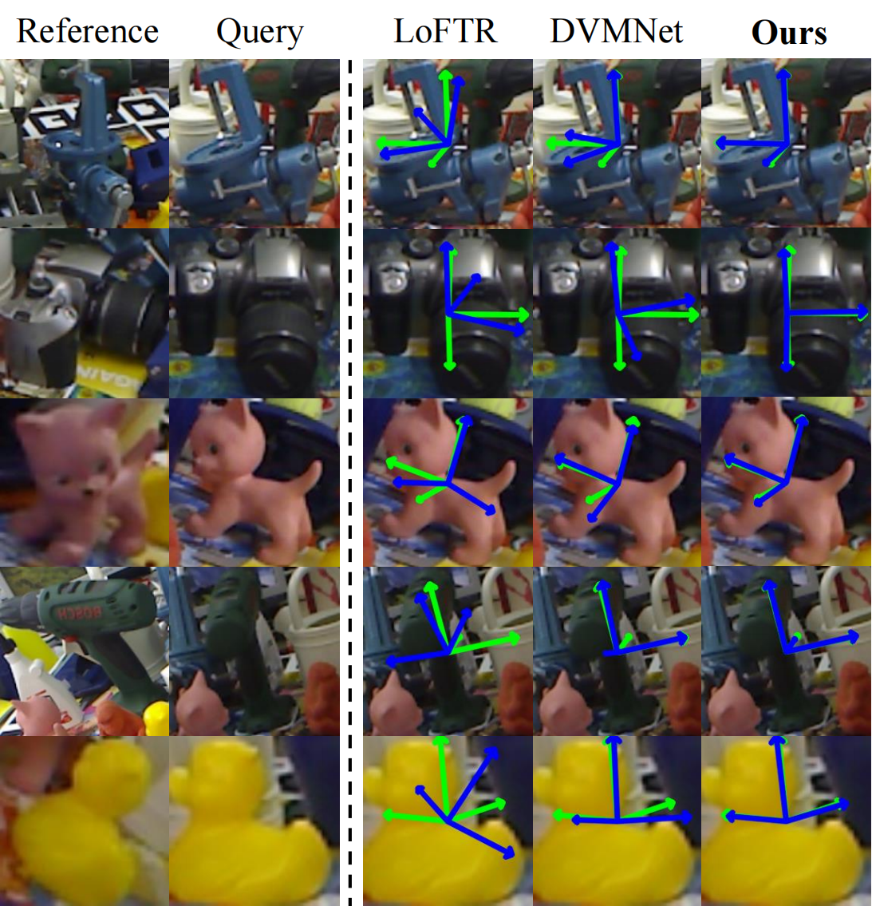
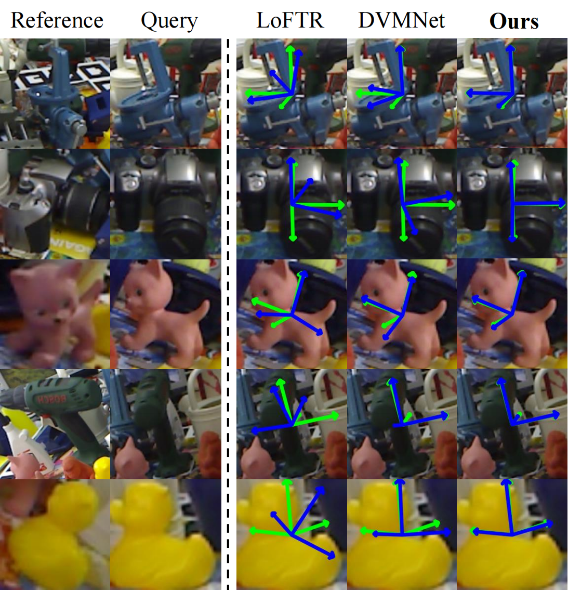

Experiment
 

Relative pose estimation provides a promising way for achieving object-agnostic pose estimation. Despite the success of existing 3D correspondence-based methods, the reliance on explicit feature matching suffers from small overlaps in visible regions and unreliable feature estimation for invisible regions. Inspired by humans' ability to assemble two object parts that have small or no overlapping regions by considering object structure, we propose a novel Structure-Aware Correspondence Learning method for Relative Pose Estimation, which consists of two key modules. First, a structure-aware keypoint extraction module is designed to locate a set of kepoints that can represent the structure of objects with different shapes and appearance, under the guidance of a keypoint based image reconstruction loss. Second, a structure-aware correspondence estimation module is designed to model the intra-image and inter-image relationships between keypoints to extract structure-aware features for correspondence estimation. By jointly leveraging these two modules, the proposed method can naturally estimate 3D-3D correspondences for unseen objects without explicit feature matching for precise relative pose estimation. Experimental results on the CO3D, Objaverse and LineMOD datasets demonstrate that the proposed method significantly outperforms prior methods, i.e., with 5.7°reduction in mean angular error on the CO3D dataset.

@inproceedings{chen2025structure,
title={Structure-Aware Correspondence Learning for Relative Pose Estimation},
author={Chen, Yihan and Yang, Wenfei and Ren, Huan and Zhang, Shifeng and Zhang, Tianzhu and Wu, Feng},
booktitle={Proceedings of the Computer Vision and Pattern Recognition Conference},
pages={11611--11621},
year={2025}
}